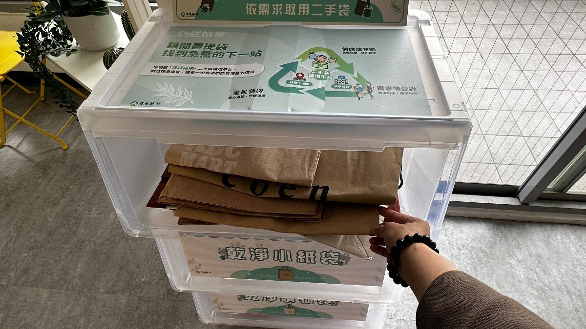
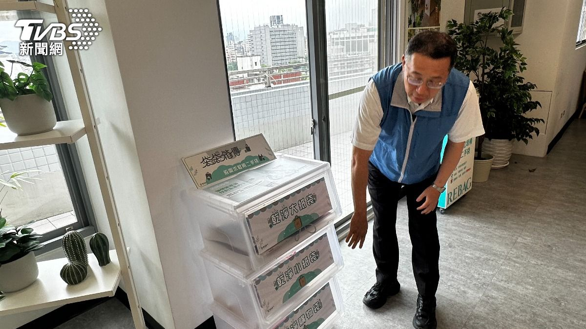
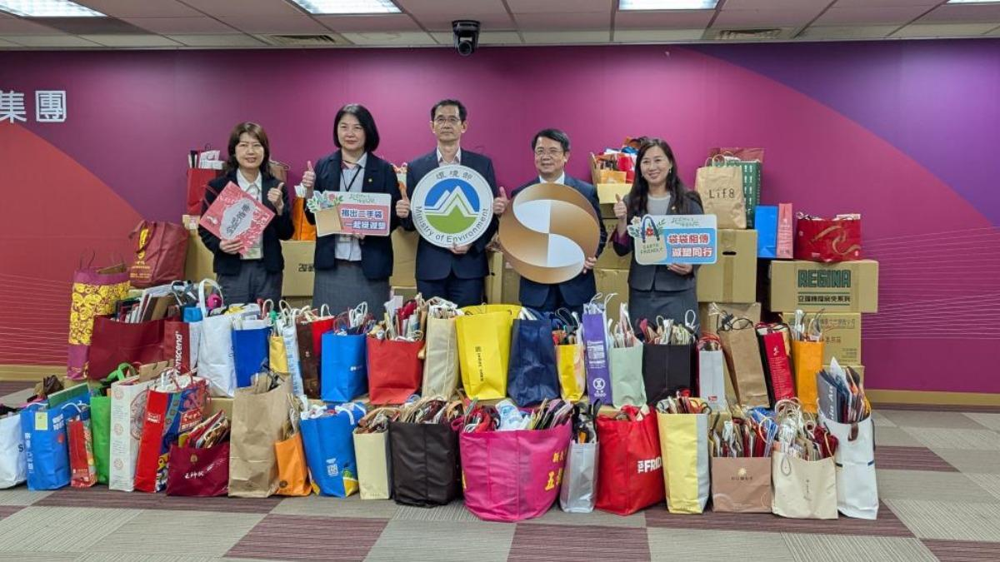
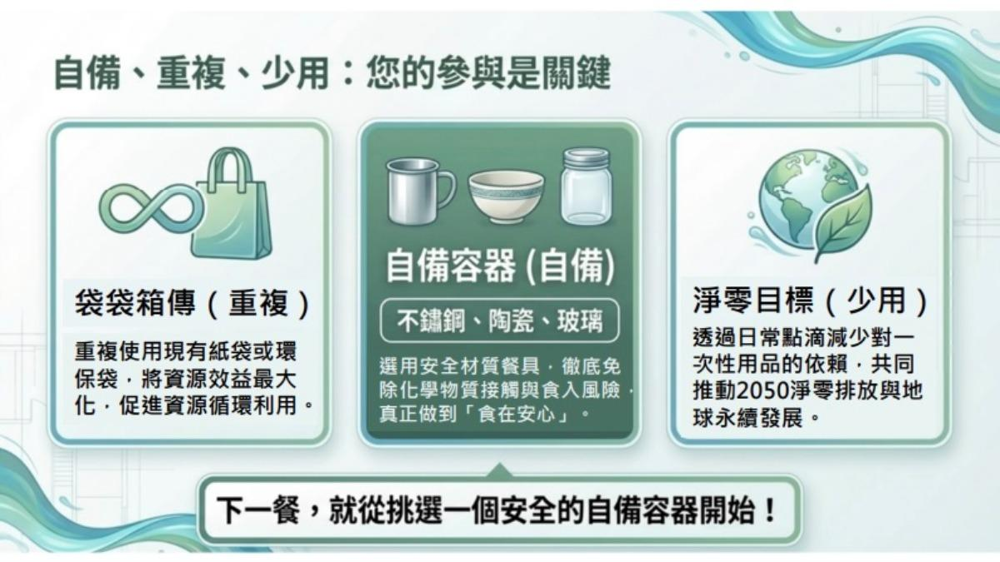

循環署署長賴瑩瑩專訪：「袋袋箱傳」串聯企業民眾拚二手袋循環
◎ 報導／陳詩璧・潘建樺
◎ 發布日期／2026.05.07
◎ 更新日期／2026.08.20

◎ 報導／陳詩璧・潘建樺
◎ 發布日期／2026.05.07
◎ 更新日期／2026.08.20
受到美伊戰爭影響，全球塑膠原料價格受到影響，台灣曾在2026年3月出現塑膠袋之亂。環境部資源循環署把閒置資源重新再利用，推出「袋袋箱傳・二手袋循環平台」，讓企業協助募捐，員工及企業率先將家中乾淨的紙袋和環保袋捐出，有袋子需求的店家和市場填寫需求後，串聯供需兩端，一個月下來，已成功募集約6萬個二手袋，並串聯起90多家的企業、縣市政府，預計三個月內能把據點擴大至一千個。

▲ 台北市的建國花市是台北市其中一個據點，供民眾取用和捐贈。（圖／陳詩璧攝）
「建國花市就有擺放二手取用袋，供民眾取用」，環境部資源循環署專門委員邱俊雄表示，資源循環署推出的「袋袋箱傳・二手袋循環平台」，將收集過來的二手袋，分成大型紙袋、小型紙袋和乾淨購物袋三種，企業、市場、市集和小吃店等凡經過申請，透過資源循環署媒合，將提供收集來的二手袋，方便民眾取用。
袋袋箱傳・二手袋循環平台其中一個據點為台北建國花市，環境部資源循環署署長賴瑩瑩提到，據點捐贈的作法，是利用過去建國花市的經驗來推動，讓二手袋循環再利用，科技把供給端的資訊和需求端的數量互相媒合，網站上也提供一些資訊，教導民眾如何捐贈乾淨的二手袋，需求端也有專人整理，不要讓二手袋有髒汙，讓它可以保持清潔完整。

▲ 民眾也可以透過二手袋循環平台，找到已媒合的據點領取二手袋。（圖／陳詩璧攝）
建國花市有六座二手袋櫃，假日也有安排志工收集和整理，同時還有20家以上的攤商響應，不提供一次性塑膠袋，改請民眾取用二手袋替代。3月26日平台上線，統計至8月10日為止，有超過187個單位或業者響應，超過14萬個募集而來的二手袋成功配對。
環境部資源循環署署長賴瑩瑩說：「我們這次利用袋袋箱傳，找到ESG的大企業，或者一些大的企業、公司行號，讓他們經由內部有專人管理，把它整理好之後，到我們平台登錄，把這個供給端跟需求端連結起來，我們就把家裡原來沒有用的拿出來，給有需要的人來用，因應中東危機，也是一個供給需求剛好可以對焦對好的作法」。
讓閒置紙袋或環保袋盡可能被重複使用，二手袋循環平台優化操作流程，讓企業、零售店家等，只要登錄資料、智慧媒合、完成流通三步驟即可完成二手袋捐贈。另外也新增「數據儀表板」及「企業供需列表」，將媒合成效轉化為視覺圖表，讓供應量、需求量、已媒合數量以及參與單位等關鍵數據變得簡單易懂。預計三個月時間，二手袋據點可達1千個。

▲ 兆豐金控二手袋捐贈3.2萬個，環境部致贈感謝狀。(圖／環境部提供)
環境部資源循環署署長賴瑩瑩談到找企業的原因，她說，這是把企業的貢獻變成ESG的表現，當企業捐贈，只要是量大的，環境部就會去頒發獎狀，或是公開表揚，希望這樣的形式可以變成企業ESG的精神，當更多企業來響應，會知道政府需要的永續是什麼。
循環署導入數位工具鼓勵全民參與，讓自備、重複使用、循環共享，變成日常生活的一部分，包括了自備餐具、環保杯。除此之外，為了因應美伊戰爭帶來的塑膠危機，塑膠原生料取得不容易，環境部資源循環署針對國內塑膠製造業，鼓勵他們用塑膠再生料當原料，目標建立再生塑膠料平台，讓大家可以找到可以提供再生塑膠料的廠商。

▲ 提倡自備、重複、少用，民眾的參與是邁向減塑的關鍵。（圖／環境部循環署提供）
再生料環保兩用袋的原料中有20%到50%比例，使用國內產出的回收塑膠，像是緩衝氣泡袋、平口或背心袋等，都逐步提高比例，防範戰爭帶來的原料短缺危機，環境部在數位化跟循環經濟的推動之下，能有更多元的方式，讓民眾改變生活，一起來做塑膠減量的工作。
環境部從2002年開始推動限塑政策，逐步做到綠色消費、循環經濟，再提倡「袋袋箱傳」政府帶頭，民眾也從日常生活習慣改變，來響應減塑，從自身做起，給下一代一個健康美好的環境。


新聞部
副總經理 王結玲
陳致中・陳詩璧・胡瑞麒・華子琛・談雍雍・吳家瑜
節目部
T觀點／莊開文・吳家瑋・莊秀惠・趙昱涵
數位事業部
總監 郭瀧億
內容策展組／廖玉貞・彭嘉儀・林佳瑤・李佳綺
ESG永續發展部
賴盈文・蔣成偉・張玲玲・黎育如・徐新瑜

© TVBS Media Inc. All Rights Reserved｜聯利媒體股份有限公司